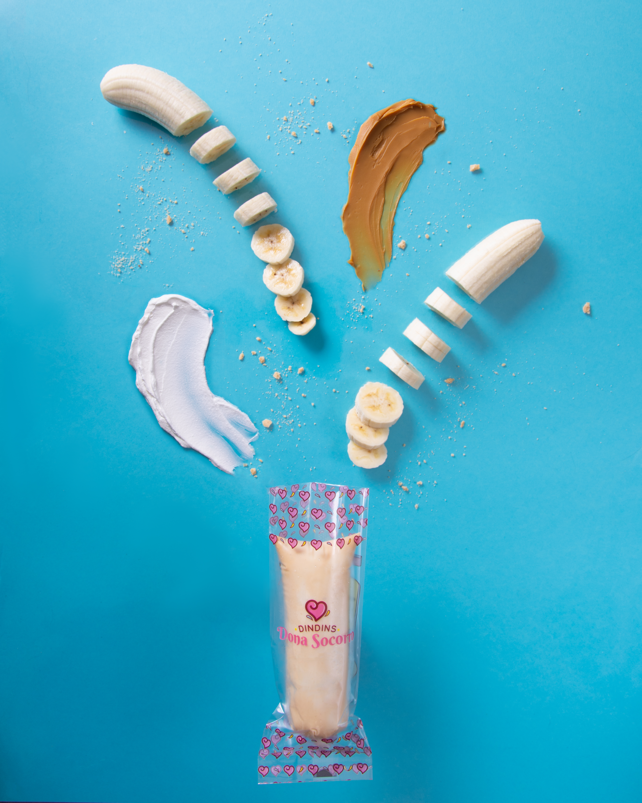
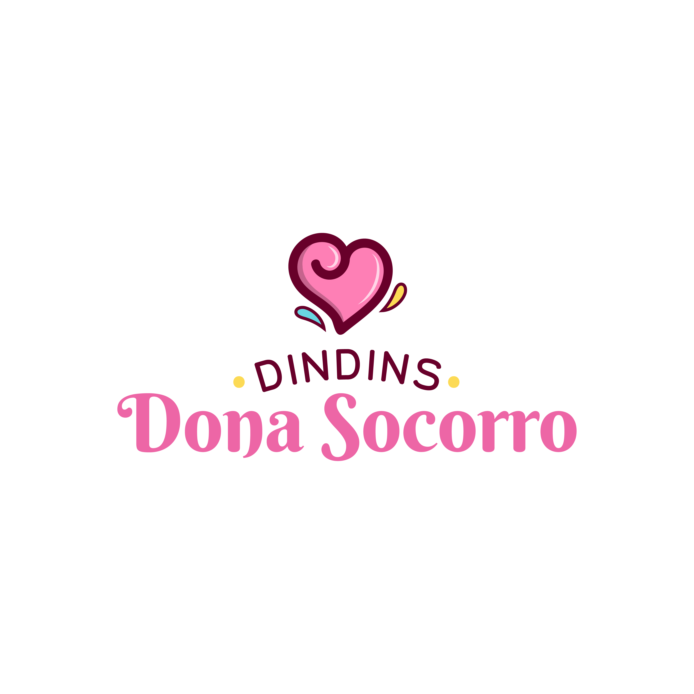
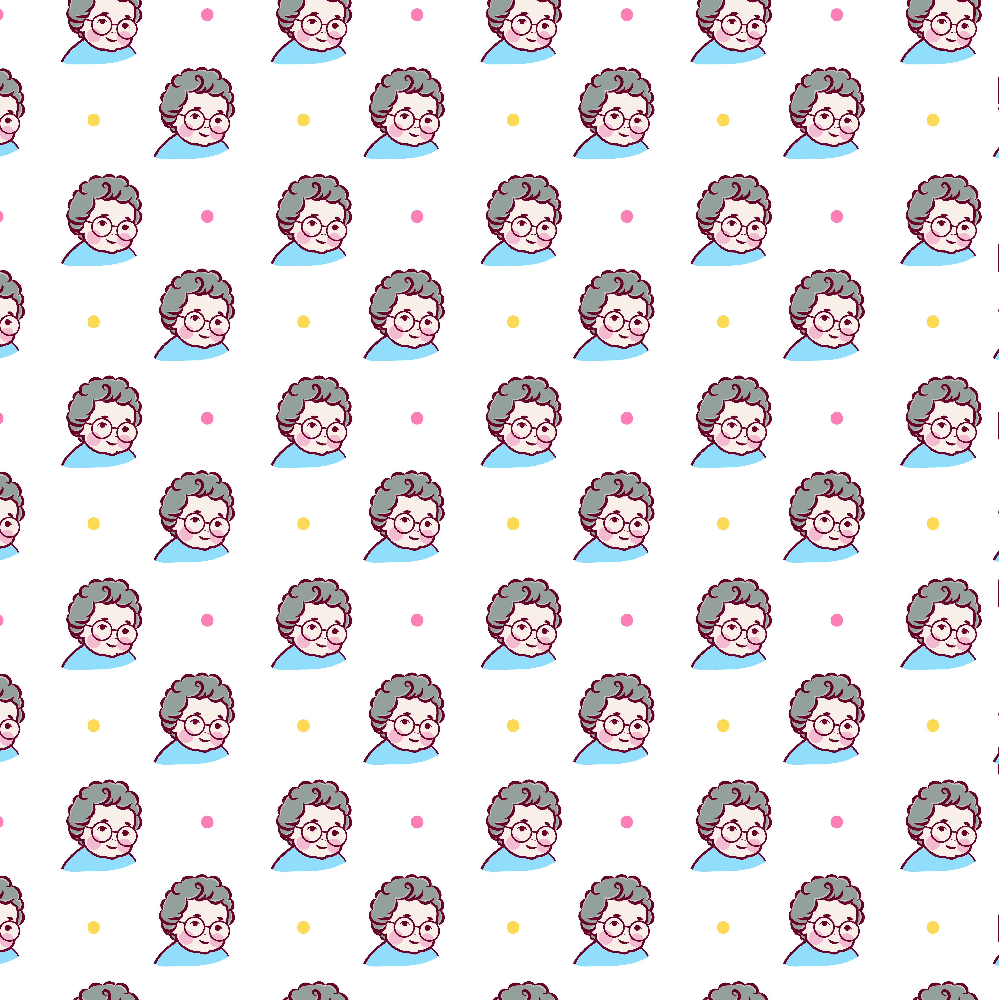

Sabor que desperta memórias desde 1994
Dindins artesanais gourmet feitos com ingredientes selecionados, muito carinho e a tradição de quem é referência no mercado de gelados há mais de 30 anos.


Sobre Nós
Os Dindins Dona Socorro estão no mercado desde 1994 com a visão empreendedora de nossa matriarca Dona Socorro e são referência de sucesso no segmento de dindins, um produto que aguça nossa memória afetiva.
Uma história que vem conquistando o mercado pela qualidade oferecida em nossos produtos com muito profissionalismo junto aos nossos clientes. Investimos constantemente no lançamento de novos sabores. Para isso, contamos com insumos de alta qualidade.
-
Paixão por Dindins
A melhor definição de quem somos: Somos apaixonados por Dindins!
-
Qualidade Garantida
A nossa prioridade, sempre foi, e será, a qualidade em nossas matérias primas. Isso garante a segurança em nossos produtos e mais sabor para os nossos consumidores.
-
100% Artesanais
Nossos Din Dins são 100% artesanais e produzidos de forma muito criteriosa, garantindo excelência no mercado de linhas de gelados.

Anos de Tradição
Sabores Gourmet
Clientes Satisfeitos
% Artesanal
Nossos Sabores
Cada sabor é uma experiência única, feita com ingredientes selecionados e muito carinho
- Todos
- Clássicos
- Mousses
- Especiais


{kind=link}
{kind=link}
{kind=link}
{kind=link}
{kind=link}
{kind=link}
{kind=link}
{kind=link}
Nossos Diferenciais
O que faz dos Dindins Dona Socorro uma marca de excelência no mercado de gelados
Qualidade Premium
Utilizamos insumos de alta qualidade para garantir segurança e sabor incomparável em cada dindin produzido.
100% Artesanal
Cada dindin é produzido de forma artesanal e criteriosa, mantendo o sabor autêntico e a tradição da receita original.
Memória Afetiva
Nossos dindins proporcionam uma experiência afetiva com sabores incríveis que remetem às melhores lembranças.
Desde 1994
Mais de 30 anos de experiência e tradição no mercado, conquistando consumidores pela confiança e credibilidade.
Inovação em Sabores
Investimos constantemente no lançamento de novos sabores gourmet, surpreendendo nossos clientes a cada novidade.
Atendimento Diferenciado
Tratamos cada cliente com exclusividade e profissionalismo, criando uma relação de parceria e confiança duradoura.
Seja um Franqueado
Faça parte da família Dona Socorro e tenha um negócio de sucesso
Galeria
Conheça de perto nossos dindins gourmet e toda a nossa linha de produtos
{kind=link}
{kind=link}
{kind=link}
{kind=link}
{kind=link}
Contato
Entre em contato conosco e saiba mais sobre nossos produtos e oportunidades de franquia
TikTok
Nosso Propósito
Levar sabor, qualidade e memória afetiva em cada dindin